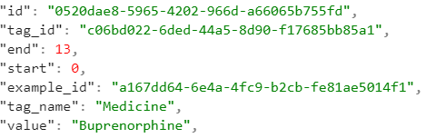
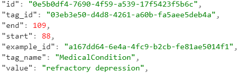
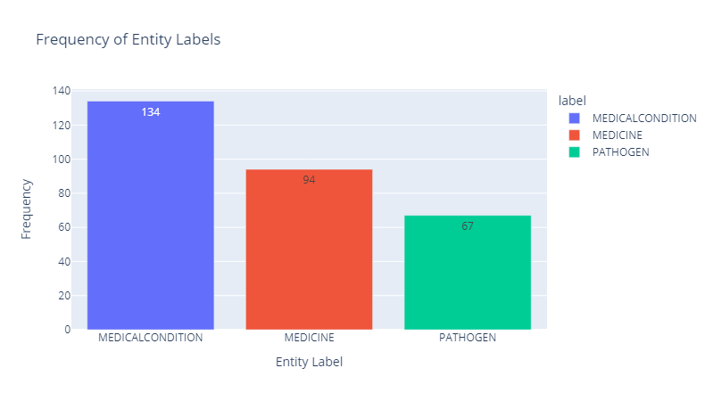
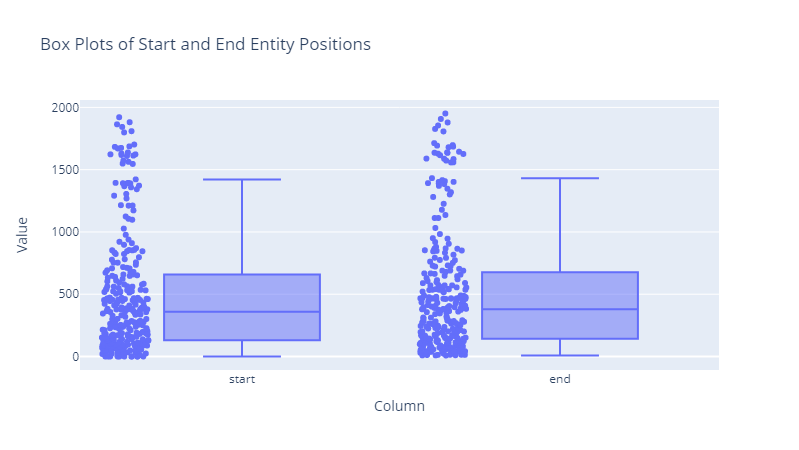

NER using RNNs and Transformer Models
NER, what is it?
- Named Entity Recognition (NER) is a task in Natural Language Processing (NLP) that involves identifying and extracting named entities from unstructured text.
- This means identifying and classifying entities into categories that are predefined (person, place, etc.)
- Biomedical NER is the task of text mining to specifically biomedical texts to determine entity types.
- Similarly, medical NER tasks mine specifically medical texts for entity types.
Purpose of this review
We are testing different deep learning techniques and their effectiveness of NER on data containing information on Medical Conditions, Medicine Names, and Pathogens.
The methods we chose are:
- Recurrent Neural Network (RNN): a method of deep learning that is used for sequential data and time-series data.
- Transformer Model: a model designed for sequence-to-sequence tasks, such as machine translation, and is known for its ability to process input sequences in parallel rather than sequentially.
Limitations
- Current NER techniques have major limitations being that the standard language models are unidirectional, operating in a single direction, and thus limit the choice of architecture that can be used for pre-training.
- While the deep learning techniques we have chosen are not perfect, they do directly address this major limitation and we will show their effectiveness moving forward.
Limitations
Limitations of our chosen techniques:
Transformer model: The size of the training data can be a limitation here. If there is not enough training data it can make the model less effective.
RNN: RNN’s are prone to over fitting which is especially true when there is a small dataset
What is Transformer Model?
The Transformer model is a neural network architecture designed for sequence-to-sequence tasks such as machine translation.
The model’s key innovation is the self-attention mechanism, which allows it to weight the importance of different words in the input sequence.
Self-attention enables the model to capture long-range dependencies and handle complex language structures effectively.
Transformer Architecture

Encoder
Decoder
Positional Encoding
Multi-Head Attention
Transformer Methods
Scaled Dot-Product Attention formula
\(\text{Attention}(Q, K, V) = \text{softmax}\left(\frac{QK^\top}{\sqrt{d_k}}\right)V\)
The Single (Masked) Self- or Cross-Attention Head Formula \(\begin{align*}\text{Attention}(Q, K, V) &= \text{softmax}\left(\frac{QK^\top + \text{Mask}}{\sqrt{d_k}}\right)V \\\end{align*}\)
Transformer - How to do it?
Annotated Dataset for Training
- Labelstud.io , Prodi.gy
Pre-process the dataset
- Tokenization - NLTK
Fine-tune a pre-trained Tranformer Model
- Huggingface - BERT
Train
Evaluate
- Metrics: Precision,recall and F1 score.
Transformer Limitations
Standard language models are unidirectional, restricting pre-training architecture options and limiting context awareness.
Transformers have high computational complexity due to numerous parameters, requiring significant resources and specialized hardware for deep models and long sequences.
Dataset
We will use the dataset called corona2 from Kaggle to identify Natural Entity Recognition to identify Medical Condition, Medicine names and Pathogens. Similarly to the dataset used in the dataset was manually tagged for training.
Labels:
- Medical condition names (example: influenza, headache, malaria)
- Medicine names (example : aspirin, penicillin, ribavirin, methotrexate)
- Pathogens ( example: Corona Virus, Zika Virus, cynobacteria, E. Coli)
Dataset Definition
| Column Name | Type | Description |
|---|---|---|
| Text | string | Sentence including the labels |
| Starts | integer | Position on where the label starts |
| Ends | integer | Position on where the label ends |
| Labels | string | The label( Medical Condition, Medicine or Pathogen) |
Dataset Sample
Text: Buprenorphine has been shown experimentally (1982–1995) to be effective against severe, refractory depression.


Dataset Visualization - Labels

Data Visualization - Position

What is a Recurrent Neural Network (RNN) starting with a Neural Network
- A basic neural network has an input layer, a hidden layer or layers, and an output layer
- Between the layers are weights and biases that are used in the calculation of the output
- The network is optimized using back propagation and a gradient descent algorithm
- Back propagation is used to find the gradient of a parameter
- A gradient descent algorithm is used to find values that minimize a loss function (such as error)
What is a Recurrent Neural Network (RNN) starting with a Neural Network
Example of a Loss function (Mean Squared Error):
\(\text{L(𝜽)} = (1/N) * ∑(y_i - y_i^*)^2\)
Gradient Descent Algorithm:
\(\text{𝜽}_j =𝜽_j - 𝛼 (∂J(𝜽) / ∂𝜽_j)\)
N : number of vector entries with yi in output vector
yi : predicted value
yi* : actual value
𝛼 : learning rate
𝜽j : input
What makes RNN different?
- A recurrent neural network is similar to a basic neural network but with the addition of a feedback loop
- In these networks activation functions (ƒ) are used to determine whether a neuron in the network is turned on or off
- The data in feedback loop is included with the input of subsequent data
- This allows for past data to influence the calculations of future outputs which is why RNNs are great for sequential data such as text
What makes RNN different?

Limitations of RNN
- One of the main problems RNNs face is an exploding or vanishing gradient
- This can occur when a large amount of data is used
- The weight in the feedback loop (W_h) becomes multiplied on itself over and over which will results in an extremely large or extremely small value
Limitiations
- For example if the weight is 3 and there are 10 data points the weight will end up being 3 to the power of ten (59049). When applied to larger data sets this number can become much larger. This number is then used in the gradient descent calculation resulting in an optimization step that is way too big which in turn results in overfitting.
- For smaller weights such as 0.5 with 10 data points the weight will be 0.000977. This will result in an optimization step that is way too small.
Solution to exploding and vanishing gradient
- A common solution to exploding and vanishing gradient is a Long Short-Term Memory (LSTM) cell
- These cells are located in the feedback loop and contain three gates within the cell
Input gate: determines which information is stored in the cell
Forget gate: determines which information will be discarded
Output gate: provides the activation for the final output
Solution to exploding and vanishing gradient
These gates use a sigmoid function which outputs a value between zero and one
0 blocks all information and 1 allows all information through
Sigmoid: \(\text{f(x)} = {1/(1+e^{-x})}\)
General gate equation: \(\text{g}_i = 𝝈(w[h_{i-1}, x_i] + b)\)
x : input, 𝝈 : sigmoid function, w : weight, h : information of i-th iteration, b : bias
RNN Continued
- LSTMs maintain a cell state as a result of the calculations from the equations below along with the sigmoid and the general gate equation
- This state is what provides the “memory” which makes it useful in named entity recognition
- Using LSTM cells in recurrent neural networks allows the network to be applied to large datasets which is very beneficial in the context of named entity recognition
Equations for LSTMs

Libraries needed for data manipulation
nbclient : Executes Jupyter notebooks programmatically
requests : Sends HTTP requests and interacts with RESTful APIs in Python
pandas : Manipulates and analyzes tabular data using DataFrame and Series
nbformat : Reads, writes, and manipulates Jupyter Notebook files
plotly.express : Creates interactive data visualizations with a simple interface
Parse data into dictionary to manipulate data.
training_data = []
for example in data['examples']:
temp_dict = {}
temp_dict['text'] = example['content']
temp_dict['entities'] = []
for annotation in example['annotations']:
start = annotation['start']
end = annotation['end']
label = annotation['tag_name'].upper()
temp_dict['entities'].append((start, end, label))
training_data.append(temp_dict)Convert data from Dictionary to Dataframe
# Initialing empty lists to store the data for the DataFrame
texts = []
starts = []
ends = []
labels = []
# Iterate through the training_data to extract individual entity annotations
for example in training_data:
text = example['text']
for entity in example['entities']:
start, end, label = entity
# Append data to the lists
texts.append(text)
starts.append(start)
ends.append(end)
labels.append(label)
# Create a DataFrame from the lists
df = pd.DataFrame({'text': texts, 'start': starts, 'end': ends, 'label': labels})
df.head(5)First five entries in dataframe

RNN Libraries
Load required libraries for the RNN.
import tensorflow as tf
from tensorflow import keras
from tensorflow.keras.layers import LSTM, Dense, Dropout, TimeDistributed, Bidirectional
from tensorflow.keras.models import Sequential
from tensorflow.keras.preprocessing.sequence import pad_sequences
from tensorflow.keras.utils import to_categoricalRNN Code
Using the dataframe created before a vocabulary of words and labels was created and then converted into indices
The sequences are then padded to a maximum length and then converted to one-hot encoded vectors
A one-hot encoded vector is a binary vector in which the label is encoded as 1 and everything else that is not the label is encoded as 0
This is necessary to train the model with tensorflow
RNN Code
words = set(df['text'].values)
word2idx = {w: i + 2 for i, w in enumerate(words)}
word2idx['PAD'] = 0
word2idx['UNK'] = 1
tags = set(df['label'].values)
tag2idx = {t: i + 1 for i, t in enumerate(tags)}
tag2idx['PAD'] = 0
X = [[word2idx.get(w, 1) for w in sentence.split()] for sentence in df['text'].values]
y = [[tag2idx[t] for t in sentence.split()] for sentence in df['label'].values]
maxlen = max(len(x) for x in X)
X = pad_sequences(X, padding='post', maxlen=maxlen)
y = pad_sequences(y, padding='post', maxlen=maxlen)
y = to_categorical(y, num_classes=len(tag2idx))After the data is manipulated the RNN model is created and compiled with the use of tensorflow
model = tf.keras.Sequential([
tf.keras.layers.Embedding(len(word2idx), 128),
tf.keras.layers.LSTM(128, return_sequences=True),
tf.keras.layers.Dropout(0.2),
tf.keras.layers.TimeDistributed(tf.keras.layers.Dense(len(tag2idx), activation='softmax'))
])
model.compile(optimizer='adam', loss='categorical_crossentropy', metrics=['accuracy'])Lastly the model is fitted and the accuracy is calculated

Conclusion
- NER is a key NLP task that involves identifying named entities in a text.
- Deep learning techniques have become more mainstream in the NER field due to their major advantages.
- The techniques we have chose, RNN and Transformer Model, have shown this to be true for various situations.
Conclusion
The accuracy of our models were:
- Transformer Model: 0.9375
- RNN: 0.9967
This shoes that when doing NER for our chosen dataset, RNN was more effective after training, but that both are over 90% accurate given the data that we have used